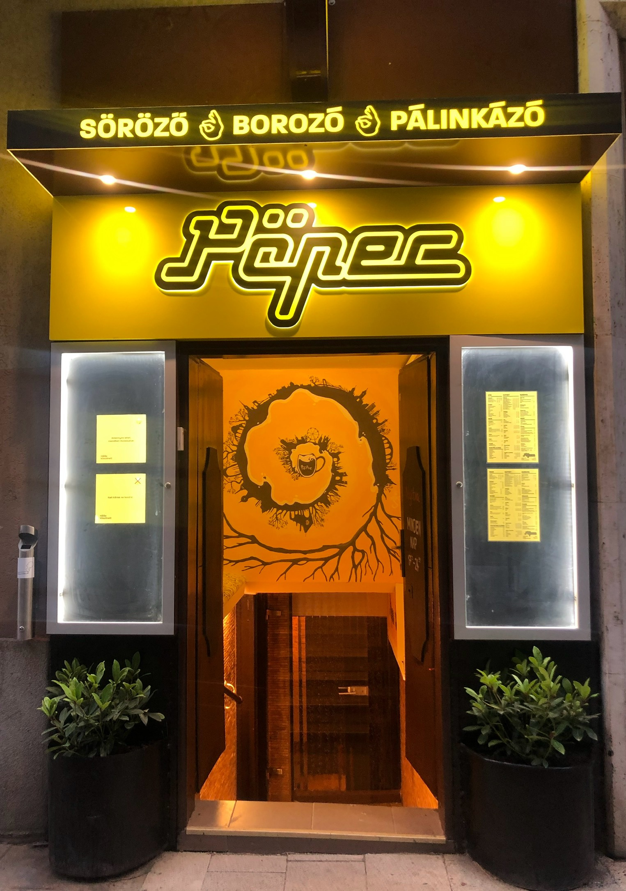
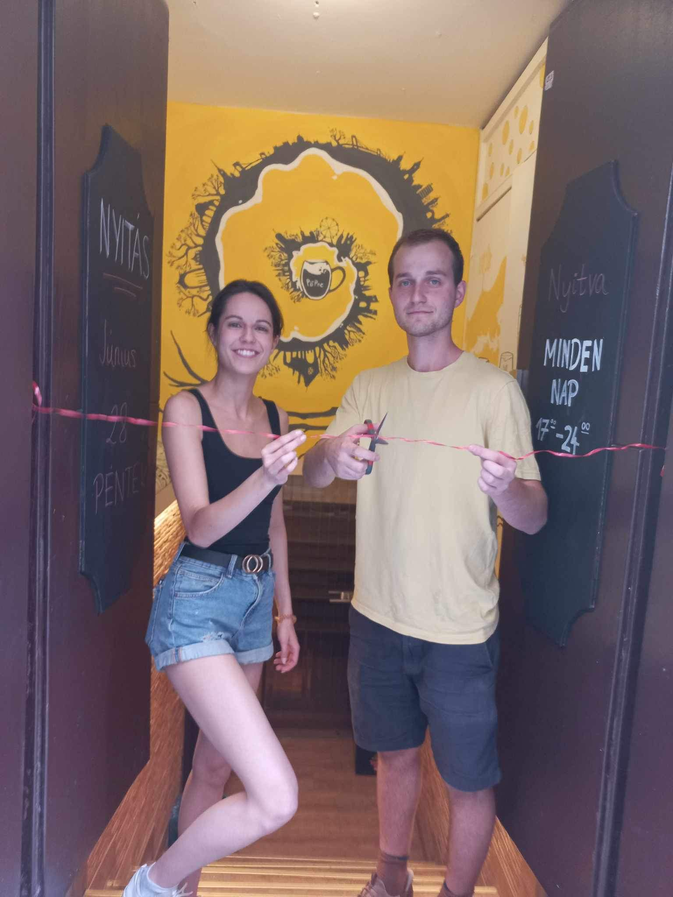

How we started
I grew up in our family-run restaurant, Andreas Bistro,
in the heart of Budapest. But like many others, we had to close down
due to COVID.
In the summer of 2024, my partner and I decided to bring that
energy back. With love and hard work, and a lot of help from our friends and family
we created Pöpec — a cozy bar for locals
to feel at home, tucked among the tourist spots in the city center. 👌

